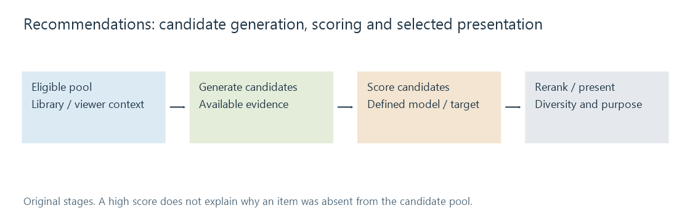
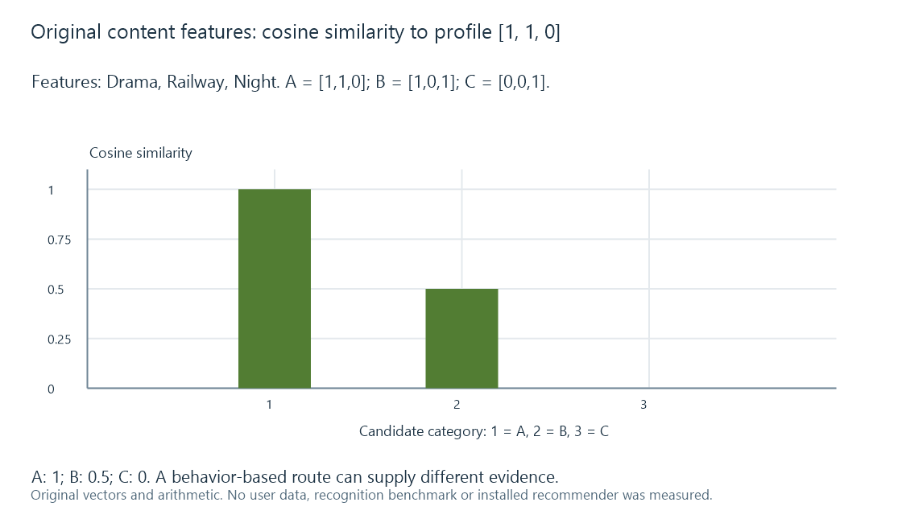

Recommendation systems for media
A recommendation system generates and ranks eligible media candidates using content, behavior or other signals, then evaluates whether the chosen presentation serves the intended discovery goal.
A recommendation proposes something useful to discover within an eligible media set. It can use descriptive features, known relationships, viewing behavior or a combination.
The result depends on what the system is trying to help the viewer do: find a familiar style, explore something different, continue a collection or discover an unseen work.
Generate candidates, score them, then choose a presentation
Candidate generation narrows the pool. Scoring estimates a particular relationship or preference signal. A later selection/reranking stage can apply availability, diversity or presentation constraints.

Those stages answer different questions. A high score among candidates does not explain why another item never entered the pool.
The eligible set can also depend on the selected library and viewer context. A discovery result and a playback/source choice remain separate operations.
Content similarity has a declared feature model
For an original example, use three binary features: Drama, Railway, Night. An invented viewer profile is [1, 1, 0].
| Candidate | Feature vector |
|---|---|
| A | [1, 1, 0] |
| B | [1, 0, 1] |
| C | [0, 0, 1] |
Cosine similarity is the dot product divided by the product of vector lengths.
For A, the dot product is 2 and both lengths are √2, giving 1. For B, the dot product is 1 with the same lengths, giving 0.5. For C, the dot product is zero, giving 0.

The numbers express similarity in this feature model. They are not probabilities of enjoyment and not an Emby score. Other feature weights or representations can change the ordering.
A genre tag is only one kind of evidence. Contributor relationships, plot topics and other supported features can add another view of relatedness.
Behavior can supply another signal
Consider these fictional viewing sets:
| Viewer | Observed items |
|---|---|
| U1 | A, B |
| U2 | A, C |
| U3 | A, C |
Overlap with U2/U3 can supply a reason to consider C for U1, even though C has no overlap with the simple content profile above.
That observation does not establish a universal preference rule. A recorded play can represent curiosity, shared-device use or an abandoned viewing, rather than an explicit approval.
A behavior model therefore needs a definition of its observations and target. Completion, replay, explicit feedback and item exposure are different signals.
Exposure affects the observed numbers
Suppose candidate X was shown 100 times and received 10 selections, while Y was shown 10 times and received 2.
Raw selection counts favor X. The observed selection rates are 10% and 20% respectively.
Y's rate is based on fewer observations. The comparison does not prove a causal preference or a stable advantage; it shows why the denominator and observation context matter.
A system that mostly shows already popular items gathers more data about them. Using those counts without considering exposure can reinforce its original presentation choices.
Evaluate a stated discovery target
An original held-out example treats C and E as the known relevant future items. A ranked list [C, D, E] contains two relevant items among three:
Precision@3 = 2/3. Recall@3 = 2/2 = 1.
These metrics describe that defined relevance set. They do not establish enjoyment, novel discovery or suitability of every item absent from the set.
Using future behavior in the feature preparation for an earlier recommendation can leak the answer into the evaluation. A time-coherent comparison keeps the available evidence separate from the later outcome.
New items and viewers need another route
An item with no viewing observations can still have content metadata. A new viewer can still have explicit preferences or choose a starting item.
Those inputs supply a cold-start path without pretending that nonexistent behavior was measured. A mixed design can use different evidence where each is available.
Incorrect identification can contaminate both routes: the wrong synopsis changes content features, and merged/split item identities change recorded behavior.
Diversity changes the final selection
If A and another near-identical candidate both score highest, choosing only those can repeat the same narrow signal. A policy can retain A and include B to offer another facet of the profile.
That is a tradeoff in the intended discovery experience, not necessarily a scoring error. The selection goal should make it assessable.
For Emby-related discovery, evaluate the actual feature/behavior source, candidate set and selected result. The primary references describe recommendation designs; this original example does not assert which proprietary or plugin algorithm an installed server uses.